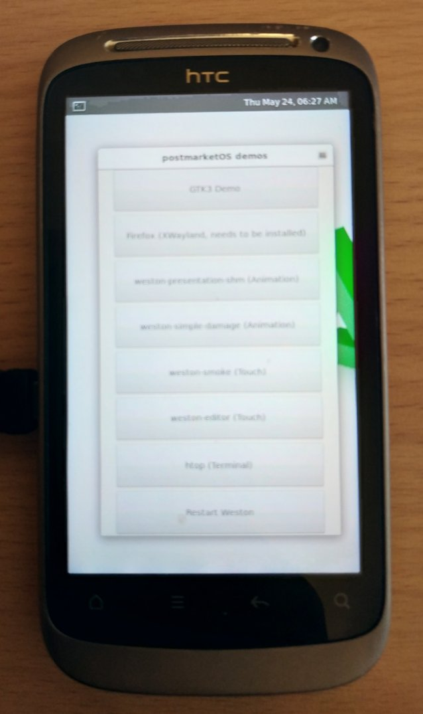

HTC Desire S (htc-saga)
Jump to navigation
Jump to search
|
 HTC Desire S running the Weston demo | |
| Manufacturer | HTC |
|---|---|
| Name | Desire S |
| Codename | htc-saga |
| Released | 2011 |
| Category | testing |
| Original software | Android 2.2 |
| Hardware | |
| Chipset | Qualcomm Snapdragon S2 (MSM8255) |
| CPU | 1.0 GHz Scorpion |
| GPU | Adreno 205 |
| Display | 480 x 800, Super LCD |
| Storage | 1.1 GB |
| Memory | 768 MB |
| Architecture | armv7 |
{kind=link}
This device is marked as not booting.
Status: cannot flash; incomplete informations
Status: cannot flash; incomplete informations
| USB Networking | |
|---|---|
| Flashing | |
| Touchscreen | |
| Display | |
| WiFi | |
| FDE | |
| Mainline | |
| Battery | |
| 3D Acceleration | |
| Audio | |
| Bluetooth | |
| Camera | |
| GPS | |
| Mobile data | |
| SMS | |
| Calls | |
| USB OTG | |
| NFC | |
| Accelerometer | |
|---|---|
| Magnetometer | |
| Ambient Light | |
| Proximity | |
| Hall Effect | |
| Barometer | |
| Power Sensor | |
| Camera Flash | |
|---|---|
| Keyboard | |
| Touchpad | |
| USB-A | |
| HDMI/DP | |
| Ir TX | |
| Ir RX | |
| Stylus | |
| Haptics | |
| Ethernet | |
| FOSS bootloader | |
What works
- Kernel compilation
- Boot from fastboot (
pmbootstrap flasher boot) - Initramfs boot
- USB Network
- Framebuffer graphics (Splash screens)
- SSH Connectivity
- Weston on framebuffer
What does not work
- Flash Rootfs (
pmbootstrap flasher flash_rootfs) - Everything else
Booting
- Unlock (s-off) the bootloader if it hasn't been unlocked before (htcdev unlock site)
- Hold the Volume Down button, and then press the Power button
- Wait for device to boot in HBOOT mode and select FASTBOOT (Make sure it says "FASTBOOT USB", not "HBOOT USB PLUG")
- Boot kernel using
pmbootstrap flasher boot
{kind=link}